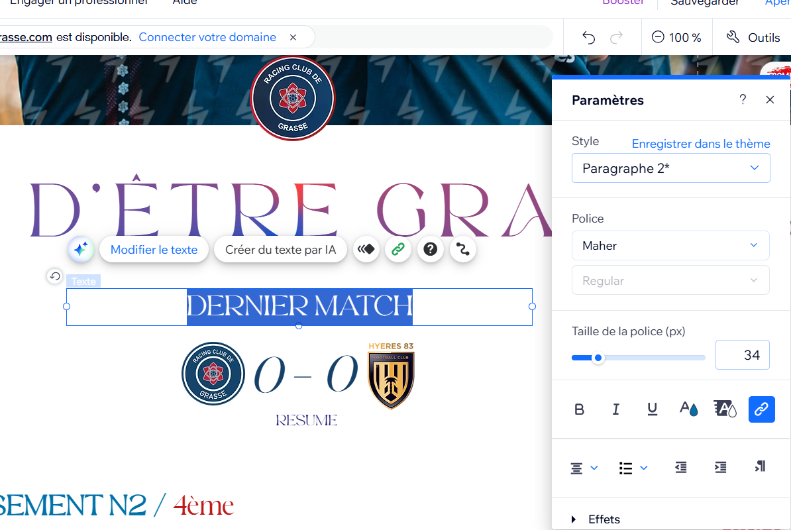

Guide Complet
Modifier Texte ou Image

- Texte : double-clic → modifier contenu, couleur, police.
- Image : clic dessus → Changer l'image → importer une nouvelle.
- Ajouter une police : menu texte > Police > Importer.
Modifier les Menus (haut de site)

- Clic sur la partie gauche ou droite du menu > "Gérer le menu".
- Ajouter page = créer un nouvel onglet.
- "Titre de la liste déroulante" = crée un menu déroulant.
- Pour le style : clic sur le pinceau (pas "gérer le menu").
Menu Burger (mobile)

- Clic sur les 3 traits > Modifier menu > Page du site et menu.
- Vous pouvez : réorganiser, renommer ou ajouter des pages.
- ⚠️ C'est distinct du menu principal, mais doit avoir les mêmes noms de page.
Compteur Match

- Clic sur le compteur > Modifier code.
- Ligne 125 = changer date & heure (⚠️ ne toucher qu'à cette ligne).
- Ligne 116 = texte en dessous du compteur (⚠️ ne toucher qu'à cette ligne).
Modifier le Slider

- Clic sur le slider > Paramètres > Diapositives.
- Créer ou modifier une diapo avec image basée sur le template fourni.
Bouton sponsor flottant

- Clic sur le bouton > Pinceau > Remplissage arrière-plan.
- Ajouter une nouvelle image.
- Pour ajouter un lien : clic sur "Changer texte et icône" > ajouter lien.
Tableau de classement

- Clic sur le tableau > Gérer contenu > Modifier le tableau.
Page Actualités

- Clic sur un post > Gérer les posts > Créer un post.
- Ajouter texte + image > onglet Paramètres :
- - Choisir couverture (template fourni)
- - Sélectionner rédacteur
- - Cocher bonne catégorie > Publier
Design des pages de Post

- Aller en haut à gauche > chercher la page "Post".
- Modifier le design global de la page ici.
Page Staff

- Descendre tout en bas > clic sur l'espace vide > "+" bleu
- Ajouter section > copier/coller un bloc membre déjà existant > modifier.
Page Événements

- Clic sur la section > Gérer événements.
- Décocher "à venir" pour voir tous les événements.
- Ajouter événement > remplir les infos > Créer brouillon > Publier.
- Modifier le design : aller à la page "Détail et inscription".
Page Galerie

- Clic > Ajouter une image > Ajouter une image > nommer > lier à une page galerie.
- Pour créer une nouvelle galerie :
- - Menu latéral > Pages et menus > "Galerie Match" > clic sur "..." > Dupliquer > Renommer > Masquer du menu.
- Modifier galerie : clic > Gérer media.
Page Partenaires
- Clic sur un logo > Changer image.
- Ajouter ou modifier et ajouter lien de redirection.
- Utiliser le template fourni pour les visuels.
Ajouter une personne sur une page / Créer une page Joueur

- Même méthode que la page Staff : dupliquer une page existante ou un bloc.
- Coller > modifier les informations.
- Créer nouvelle page joueur : Menu latéral > Pages et menus > sélectionner page d'un jouer > clic sur "..." > Dupliquer > Renommer > Masquer du menu.